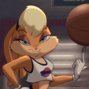

Сексуальные героини мультфильмов: Топ-10
Большая часть нашей редакции — мужчины, которые любят мультфильмы и красивых женщин. А особенно — красивых женщин в мультфильмах. Ведь нарисованные девушки всегда прекрасны и не стареют даже спустя десятилетия. Главным красавицам из мира мультипликации мы посвящаем эту статью.

Предупреждаем заранее: этот материал просто наполнен сексуальной объективацией женщин! Тем, кому это претит, лучше сразу закрыть страницу. И — уж простите, но мы решили не включать в него девушек из аниме. По одной простой причине: для них требуется не топ-10, а как минимум топ-100. А вот героинь советских мультиков мы постарались не забыть.
10. Джулия («Тяжёлый металл 2000»)

Мультфильм «Тяжёлый металл 2000» критики разгромили, и было за что. Он сильно уступал в качестве первому «Тяжёлому металлу» 1981 года. Но один персонаж искупает многие недостатки сиквела: воинственная мстительница Джулия.
Фотомодель Джули Стрейн не только озвучила эту героиню, но и послужила прототипом для её внешности. Неудивительно, что создатели начали обнажать Джулию по любому поводу. Сперва на ней непонятным образом разодрали комбинезон (как это произошло, осталось за кадром), а для финальной битвы и вовсе одели в красное бикини. Видимо, чтобы воительница сражала врагов одним только видом своего декольте.
9. Лана Кейн («Спецагент Арчер»)

Если спецагент Арчер — это пародия на Джеймса Бонда, то в образе его темнокожей напарницы Ланы Кейн создатели сериала высмеяли типичную девушку Бонда. Только в данном случае, бывшую.
Лана вечно соперничает с Арчером, пытаясь доказать, что как агент она круче. По крайней мере, в плане внешности и вкуса в одежде она ему точно не уступает. Её короткие платья, больше похожие на длинные свитеры, — само воплощение шика тёплых ламповых 1970-х. Ну а поскольку жизнь шпионов — это, как всем известно, сплошной секс и соблазн, в сериале нам не раз довелось увидеть Лану и без них.
8. Лила Туранга («Футурама»)

Физические недостатки не всегда мешают женщине быть красивой. Взять хоть Турангу Лилу из мультсериала «Футурама». У неё всего один глаз в середине лба, зато какой огромный! В него мужчины могли бы смотреть вечно… вот только их глаза постоянно опускаются ниже. Количество глаз не помешало обожать Лилу множеству парней, включая Фрая, главного героя сериала.
Но Лила не просто экзотическая красавица, а ещё и решительная героиня, а также капитан «Межпланетного экспресса». Так что она секс-символ для тех, кто любит суровых и сильных женщин. Если же вам по вкусу хрупкие барышни — обратите внимание на её напарницу Эми Вонг. Впрочем, нет, не обращайте. У нас же Лила на восьмом месте.
7. Жасмин («Аладдин»)

Горячая арабская принцесса Жасмин из диснеевского «Алладина» совсем не похожа на угнетённую женщину востока. Её полупрозрачные шаровары и обнажённый живот вряд ли одобрили бы в средневековом Багдаде… да и в современном тоже. Впрочем, пусть вас не обманет внешность, Жасмин далеко не самый доступный цветок. Хотя красавица и прожила всю жизнь во дворце султана, она особа решительная и упрямая. А для охраны от назойливых ухажёров у неё есть личный тигр.
Жасмин — наш идеал южной красавицы. Будем надеяться, Наоми Скотт, которая сыграет принцессу в новой версии «Аладдина» от Гая Ричи, окажется достойна этого звания.
6. Принцесса («Бременские музыканты»)

Наш топ не мог обойтись без главного мультяшного секс-символа Советского союза: прекрасной принцессы-трубадурочки из «Бременских музыкантов». С её коротким платьицем, оставляющим на виду стройные ноги, сексуальная революция ворвалась на отечественные экраны. Она мило краснела, хорошо танцевала и прекрасно пела голосом Эльмиры Жерздёвой. В этом, кстати, нам повезло, потому что Олег Анофриев, озвучивший остальных героев, порывался спеть и за принцессу.
И если в первой части девушка слишком уж походила лицом на Трубадура, то во втором мультфильме похорошела ещё больше и окончательно превратилась в самую сексуальную мультяшку советской анимации.
5. Харли Квинн («Бэтмен»)

Подружка Джокера Харли Квинн впервые появилась не в комиксах или фильмах, а в мультсериале «Бэтмен» начала девяностых. И сразу стала любимицей фанатов. Великолепно сложенная, гибкая и весело хохочущая Харли будоражила воображение. Её костюм Арлекина подчёркивал все достоинства фигуры. Недаром девушки на конвентах обожают косплеить именно Харли Квинн.
Её безумная любовь к Джокеру, ради которого она бросила карьеру психиатра, это одна из лучших романтических историй в супергероике. Увы, мистер Джей оказался недостоин такого сокровища и часто пренебрегал красавицей. Его занимали только мысли о прекрасном мужчине в чёрном латексе…
4. Ариэль («Русалочка»)

Ещё одна диснеевская принцесса, на этот раз морская. Вопреки названию сказки The Little Mermaid, русалочка в мультфильме вовсе не маленькая. Ариэль — уже взрослая красавица с великолепной копной рыжих волос, которые почему-то развеваются на ветру, даже будучи мокрыми. Из одежды на красавице — только две довольно крупные ракушки вместо купальника. Ну как в такую не влюбиться?
Единственное, что смущает, — это рыбий хвост вместо ног и других важных частей тела. О физиологии русалок лучше не задумываться. Благо, по ходу мультфильма Ариэль снимает этот вопрос, получив очаровательные ножки.
3. Гаечка («Чип и Дейл спешат на помощь»)

Знаем, о чём вы сейчас подумали: «Вы что, она же МЫШЬ!» Но для многих мальчишек девяностых Гаечка из «Чипа и Дейла» стала первой любовью и богиней. Она нарисована с почти человеческой фигурой и носит комбинезон, который её подчёркивает. У неё потрясающие волосы и огромные глаза.
Ну и главное: Гаечка, пожалуй, самая умная героиня нашего топа. Она гениальный механик, способна собрать супер-машину из любого хлама и найти остроумный выход из ловушки. А мозги — это самая сексуальная часть тела женщины. Так что не волнуйтесь: можно обожать Гаечку и не считаться любителем «фурри».
2. Эйприл о’Нил («Черепашки-ниндзя»)

Отважный репортёр шестого канала Эйприл о’Нил была первым человеком, который подружился с Черепашками-ниндзя. Но и сама она стала не менее знаменитой, во многом благодаря запоминающейся внешности. Её каштановые локоны и облегающий жёлтый комбинезон сделали журналистку одной из самых узнаваемых героинь в поп-культуре. Тысячи мальчишек готовы были спасать мисс О’Нил из плена, куда она постоянно попадала.
Кстати, свой культовый образ Эйприл обрела именно в мультсериале, а в комиксах была ничем не примечательной лаборанткой. С тех пор внешность героини пытались осовременить, но никакая Меган Фокс не заменит нам настоящую Эйприл — нарисованную!
1. Джессика Рэббит («Кто подставил кролика Роджера?»)

О-о-о-у, да-а-а! Другой победительницы быть просто не могло.
Джессика Рэббит, жена Кролика Роджера — бесспорно, самая сексуальная мультяшка в истории кино. Её пышные формы едва помещаются в тесном красном платье. Её глаз всегда таинственно прикрыт чёлкой, а рыжие локоны ниспадают почти до самых стройных ножек. Это мультяшка, в которую не стыдно не только влюбиться, но и испытывать к ней страсть. Перед ней не устоял бы ни один мужчина. И даже немного обидно, что она выбрала в мужья кролика ростом вдвое ниже неё.
Джессика — это сам соблазн, самый совершенный образ роковой женщины, когда-либо созданный аниматором. Она не плохая. Её просто так нарисовали.
Немного не дотянули до топ-10

Лола Банни — подружка Багза Банни, которая на полвека младше него. Лолу создали специально для фильма «Космический джем», чтобы разбавить чисто мужскую компанию мультяшек. Но с тех пор она поселилась во многих выпусках Loony Tunes.
Роуг, красавицу-мутантку из мультсериала «Люди Икс», многие хотели бы поцеловать или обнять, но не стоит этого делать. Своим прикосновением она высасывает жизненные силы и даже суперспособности. Мы не включили Роуг в основной список, потому что она изначально всё-таки персонаж комиксов, а не мультфильмов.
Ещё один советский секс-символ: очаровательная мама дяди Фёдора, при которой каждый согласился бы стать папой… ну или дядей с большими усами. С ней связана неразрешимая загадка: её бюст постоянно меняет размер, становясь то больше, то меньше и меняя форму. Почему — спросите у Союзмультфильма.

Нет, правда, что с ней творится?